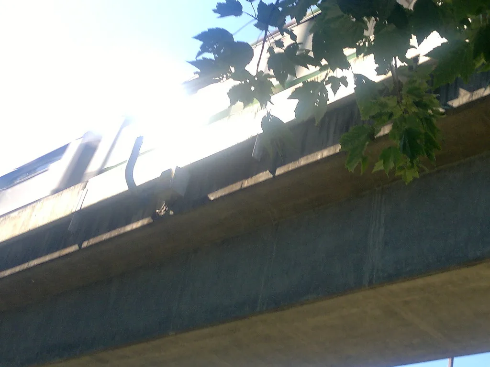

폭염에 온열질환자 급증, 질병관리청 "7말 8초 주의"
전국적인 폭염이 이어지면서 온열질환자 수가 빠르게 늘고 있다. 질병관리청이 전국 500여 개 응급실 운영 의료기관과 함께 가동 중인 온열질환 응급실감시체계에 따르면, 7월 들어 누적 온열질환자와 추정 사망자가 계속 증가하는 추세를 보이고 있다. 특히 기온이 치솟은 날에는 하루 사이 신고 건수가 큰 폭으로 늘어나는 양상이 나타났다. 온열질환자 대부분은 실외 작업이나 야외활동 중 증상을 호소한 것으로 파악돼, 폭염 속 무리한 활동에 대한 주의가 요구된다.
질병관리청은 폭염이 본격화하는 7월 말에서 8월 초 사이가 온열질환 발생의 고비가 될 것이라고 경고했다. 한여름 무더위에 신체가 어느 정도 적응한 것처럼 느껴지더라도, 폭염이 누적되는 시기에는 오히려 온열질환 위험이 더 커질 수 있다는 게 당국의 설명이다. 매년 폭염 피해가 특정 시점에 집중돼온 만큼, 올해도 비슷한 흐름이 반복될 수 있다는 우려가 나온다.

당국이 특히 주의를 당부하는 대상은 고령층과 장애인, 만성질환자 등 폭염 취약계층이다. 질병관리청은 이들을 위한 맞춤형 예방 행동요령 8종을 마련해 배포한 바 있다. 체감온도가 38도에 이르는 폭염중대경보 단계에서는 전체 사망 위험이 평소보다 1.16배, 심혈관질환으로 인한 사망 위험은 1.14배까지 높아진다는 분석도 함께 제시됐다. 독거노인이나 홀로 지내는 취약계층의 경우 이상 징후를 스스로 알아차리기 어려운 경우가 많아 주변의 관심이 더욱 중요하다는 지적이다.
전국 곳곳에는 폭염특보가 발효된 상태이며, 일부 지역에는 가장 높은 단계인 폭염중대경보까지 내려졌다. 낮 최고기온이 35도를 넘나드는 날이 이어지면서 야외활동이나 옥외작업에 나서는 이들의 안전 관리에도 비상이 걸렸다. 건설 현장과 농촌 지역 등 옥외작업이 많은 업종에서는 작업 시간을 조정하거나 그늘막과 휴식 시간을 늘리는 방식으로 대응하고 있다.
보건당국은 무더위 시간대인 낮 12시부터 오후 5시 사이에는 야외활동을 가급적 자제하고, 충분한 수분을 섭취하며, 어지럼증이나 두통 등 이상 증상이 나타나면 즉시 서늘한 곳으로 이동해 휴식을 취할 것을 권고하고 있다. 특히 혼자 지내는 고령자의 경우 주변에서 안부를 자주 확인해줄 것을 당부했다. 어린이나 반려동물 역시 체온 조절 능력이 상대적으로 약한 만큼, 차량 내 방치를 절대 피해야 한다는 주의도 함께 나온다.
지방자치단체들은 무더위쉼터 운영 시간을 늘리고 거리 곳곳에 그늘막을 추가로 설치하는 등 폭염 대응에 나서고 있다. 일부 지자체는 취약계층을 대상으로 냉방용품을 지원하거나, 폭염 특보 발효 시 안전 문자를 통해 주의를 당부하는 체계도 함께 가동하고 있다.
폭염이 당분간 이어질 것으로 예보된 만큼, 온열질환자 증가세도 쉽게 꺾이지 않을 것이라는 우려가 나온다. 당국은 폭염 특보가 해제될 때까지 예방수칙 준수를 거듭 강조하며, 실외활동 시 각별한 주의를 기울여 달라고 재차 당부했다. 무더위가 예년보다 이른 시기부터 기승을 부리고 있는 만큼, 여름철 내내 긴장을 늦추지 말아야 한다는 목소리가 이어지고 있다. 의료진들도 어지럼증이나 근육경련 같은 초기 증상을 가볍게 여기지 말고 신속히 대처해야 한다고 조언한다.